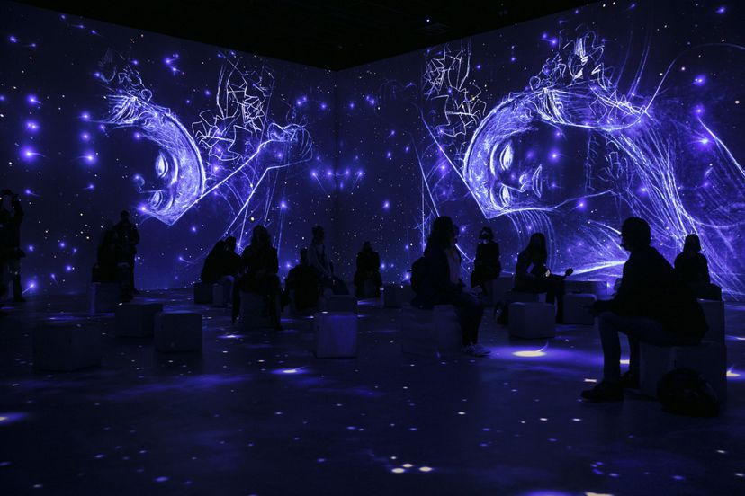

La propuesta del Centro de Artes Digitales Ideal relaciona al artista con Cataluña y el feminismo
Se le conoce por El beso, una pintura cargada de sensualidad, que retrata una pareja enlazada en la intimidad. Gustav Klimt (1862-1918), enfant terrible del arte austriaco, escandalizó con imágenes abiertamente sexuales la sociedad vienesa entre los siglos XIX y XX. En 1897 fundó la Secesión Vienesa, movimiento de renovación que rechazaba el arte académico oficial y sus obras, entre el Simbolismo y el Art Nouveau (el equivalente del Modernismo en Cataluña) provocaban amor y odio a partes iguales. Nunca se casó, pero tuvo incontables mujeres e hijos y a su muerte se formalizaron 14 demandas de pensiones alimenticias.
Ahora la historia de Klimt, sus obras y sus mujeres llegan a Barcelona en forma de experiencia inmersiva de la mano del Centro de Artes Digitales Ideal. Tras la Barcelona en blanco y negro de los años 50 y 60, la nueva propuesta se plasma en la explosión de colores y los ornamentos dorados de inspiración bizantina característicos de Klimt. La proyección inmersiva de 30 minutos, que ocupa la enorme sala central del Ideal, así como el vídeo en 3D (que se disfruta con visores individuales de realidad virtual), han sido realizados por Layers of Reality, en colaboración con el estudio belga Exhibition Hub. Las dos producciones cuentan con un presupuesto cercano al millón de euros y se estrenan simultáneamente en Bruselas y Barcelona.
La diferencia está en el recorrido expositivo que arropa las piezas digitales. En Barcelona, el comisariado de la catalana Imma Fondevila y la austriaca Theresia Nickl relaciona Klimt con el naciente movimiento feminista y con Cataluña. “La muestra vincula en una videoinstalación las obras de Klimt y las de Anglada Camarasa, artista modernista más célebre entonces que Casas o Nonell”, asegura Fondevila. Los dos artistas coincidieron dos veces: en 1904, en una muestra en la Secesión de Viena, y en 1911, en la Exposición Internacional de Bellas Artes de Roma donde compartieron el primer premio.
“No tenemos pruebas documentales de que se conocieran, pero los puntos de contacto entre sus obras son evidentes: desde la riqueza cromática y la saturación del color hasta la pasión por la representación de la mujer y los paisajes de ensueño”, añade.
La relación con el naciente movimiento feminista se aborda a partir de Emilie Flöge, una de sus compañeras sentimentales más duraderas (hay quien sostiene que fue la modelo de El beso junto al artista). Flöge, que regentaba una sastrería con sus hermanas, fue una diseñadora y empresaria que encarnó el espíritu de modernización de la mujer en busca de su independencia. El discurso sigue en una sala dedicada a las mujeres catalanas y austriacas de la época que lucharon por participar en la sociedad, donde se exponen joyas, objetos, trajes y un retrato de Francesca Bonnemaison de Lluïsa Vidal, la pintora más relevante del Modernismo catalán, fallecida de gripe española.
Con Klimt, el Ideal estrena nueva sala de 300 metros cuadrados, donde se presenta una instalación del estudio barcelonés Broomx, que permite interactuar con las obras de Klimt en una pantalla gigante de 180º. También hay un mapping y una escultura anamórfica, que descompone El beso en diferentes planos, de modo que cada visitante puede ver la imagen completa desde un punto determinado de la sala, que deberá hallar por sí mismo. “Inauguramos el centro en octubre de 2019 y seis meses después ya estábamos en confinamiento. Pero, pese a las restricciones, ya hemos recibido 200.000 visitantes”, apunta el director del centro Jordi Sellas, que destaca que se trata de una iniciativa totalmente privada.
Acompañando a la muestra de Klimt, los responsables del Centro de Artes Digitales Ideal han previsto actividades complementarias.
“Para las noches de los jueves hemos diseñado una programación más experimental y ecléctica, que toca distintas teclas, desde proyectos escénicos hasta actuaciones musicales”
indica el director del centro, Jordi Sellas. Entre los participantes están Alexandrae, el dueto formado por Elena Tarrats y Marc Vilajuana; Marta Cascales y Grauwi, con sus universos sonoros intimistas y minimalistas, y el grupo Delafé. Todas las actuaciones tienen lugar en un espacio diseñado por Rafel Plana, inspirado en el Kabarett Fledermaus (Cabaré del Murciélago), un local inaugurado en Viena en 1907, con el cual colaboraron Klimt y otros artistas de la Secesión.